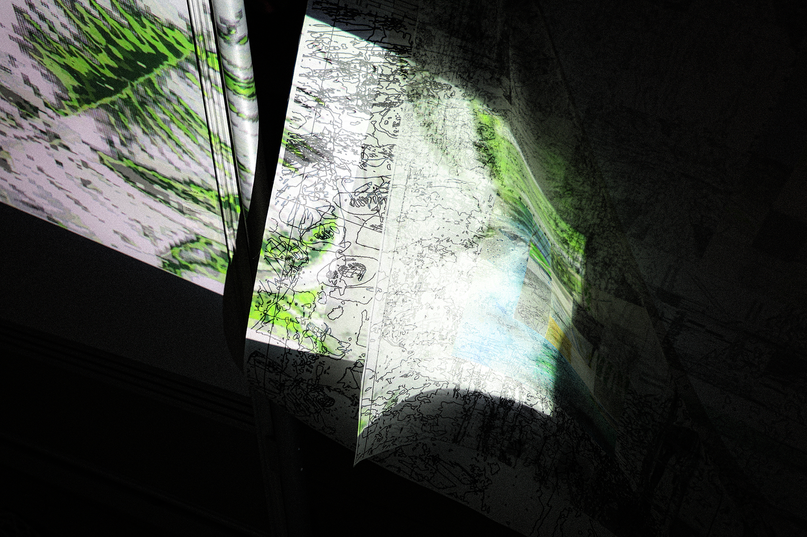
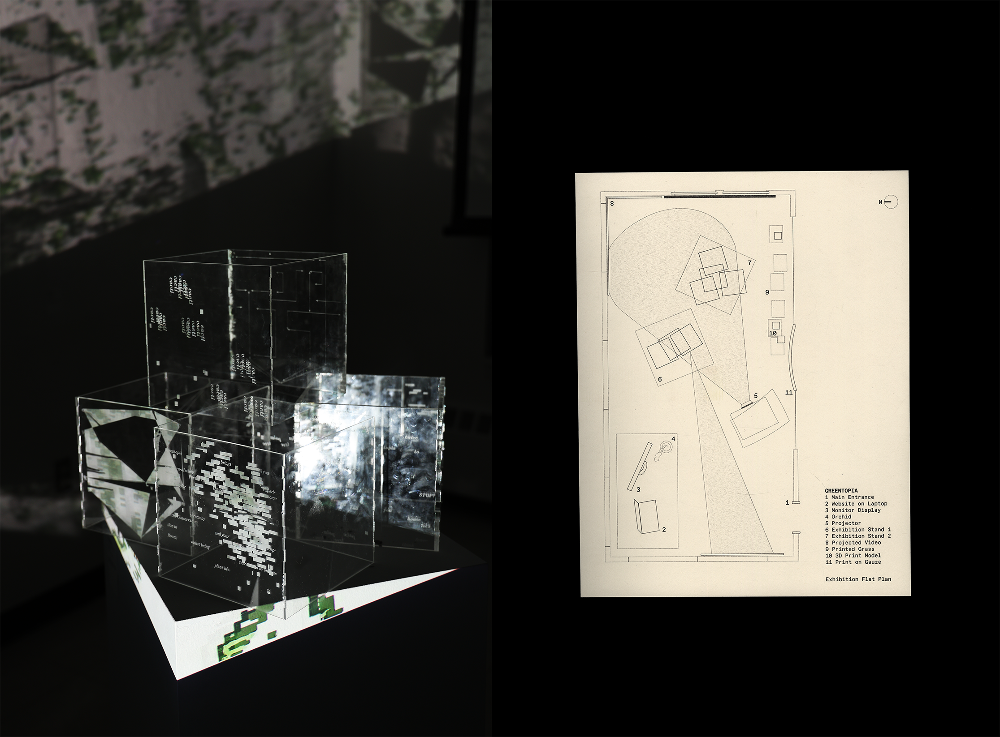
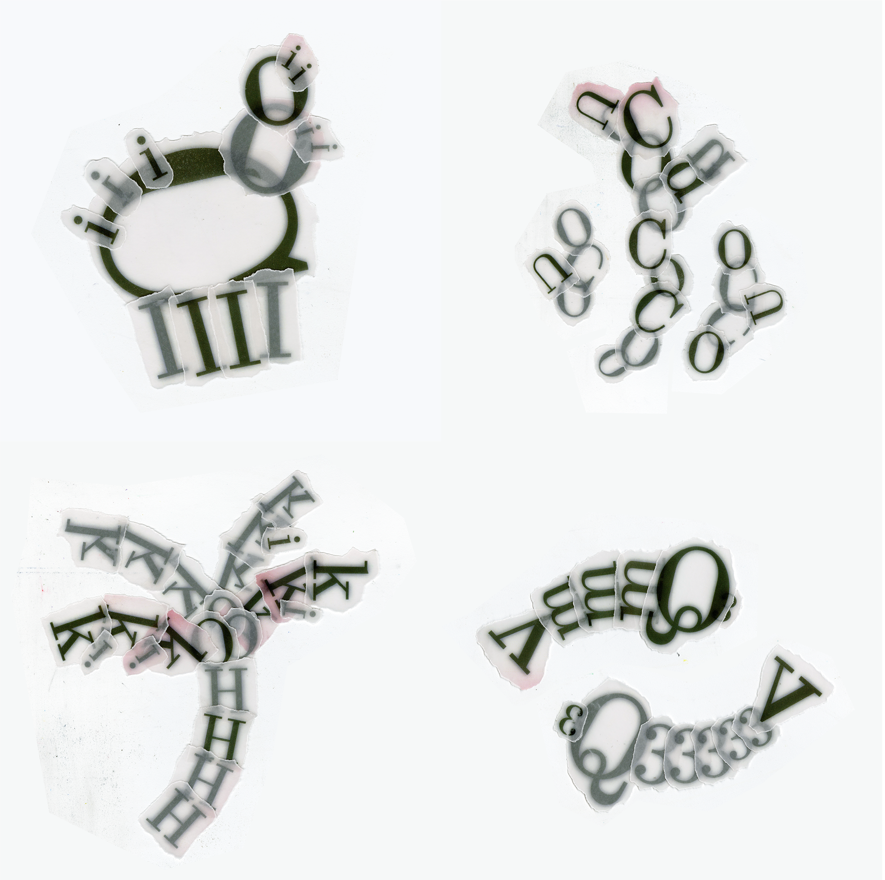
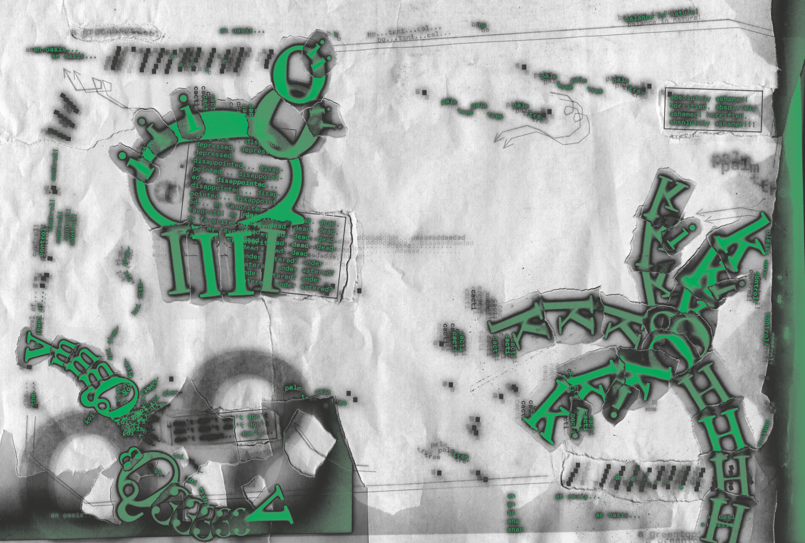

Group Project / Exhibition / Motion Graphics / Website Design / Laser Cut
Fall 2024
In this group project, we examined a stereotypical western greenhouse and deconstructed the creation of this Utopia that exoticized the ideal of nature and operates on superficial curation. Through a series of progression, we landed on recreating an exhibition that satires the American gaze. I mainly designed laser cut acrylic boxes as boundaries of the greenhouse’s discipline, and engaged in the curation of this exhibition.Credits: Justin Xiao, Marie You, Nor Wu





